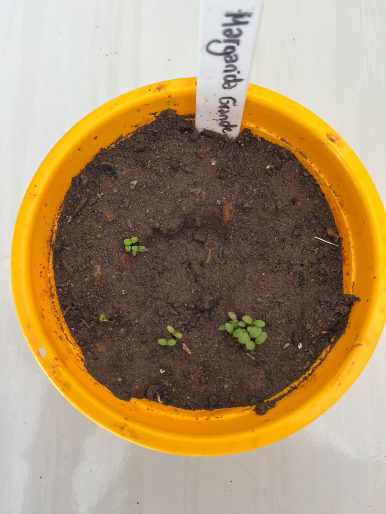

Jardim da Biodiversidade

Nome científico: Leucanthemum maximum
Família botânica: Asteraceae
Origem: Europa
Vaso na Horta Escolar Viva: 🟡 Amarelo
A Margarida Grande é uma flor ornamental conhecida por suas pétalas brancas e seu centro amarelo vibrante. É uma planta que transmite beleza, leveza e alegria aos jardins, sendo muito utilizada em espaços educativos e áreas verdes.
Suas flores chamam a atenção de diversos insetos, contribuindo para a biodiversidade do ambiente.